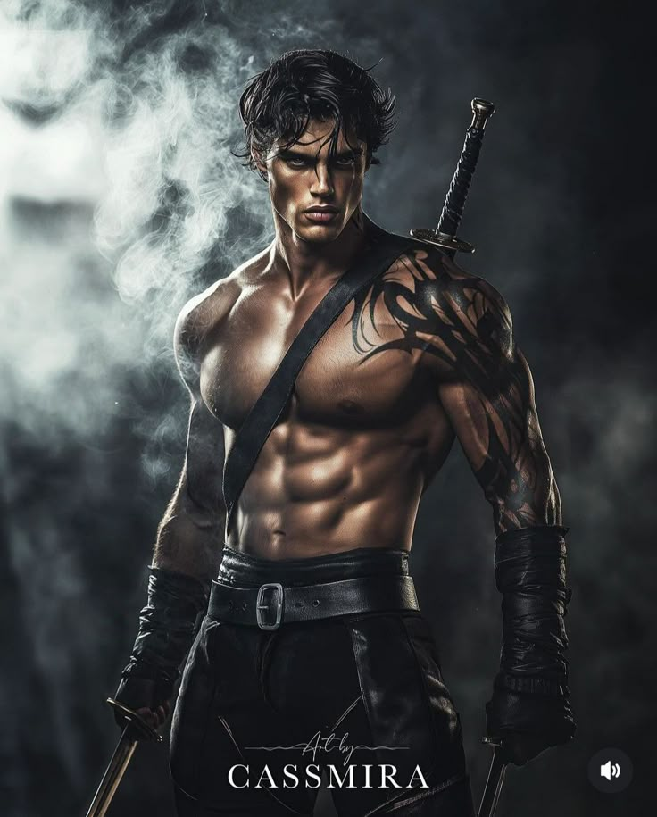

Vínculo con Sgaeyl
Es una de las dragonas más poderosos de la historia, es una dragona azul quien esta vinculada amorosamente con el segundo dragon mas poderosos de Navarre, Tairn, Un dragon negro que a su vez esta vincualdo con mi pareja Violet.

Líder de la Cuarta Ala en el Colegio de Guerra Basgiath.
Soy Xaden Riorson, personaje fictcio del libro ALAS DE SANGRE. Soy el lider del Ala 4, Tambien soy el Lider de los Marcados ya que ellos confian en mi al liderar la rebelión en venganza a la muerte de nuestros padres. Soy el duque de Tyrrendor y controlador de las sombras (Tambien con peuqeño gran secreto) y mi dragona se llama Sgaeyl.
Es una de las dragonas más poderosos de la historia, es una dragona azul quien esta vinculada amorosamente con el segundo dragon mas poderosos de Navarre, Tairn, Un dragon negro que a su vez esta vincualdo con mi pareja Violet.
Manipulación total de la oscuridad para combate. Tambien tengo buenas reseñas en combate fisico lo que me convirtió en el LIder de Ala 4. Tambien cuento con otra habilidad secreta, a ver si la adivinas... conmigo parace que piensas en voz alta...
Responsable de la supervivencia de la Cuarta Ala durante el dia y Lider de la rebelión durante la noche junto a las moarcados en contra de los altos cargos de Navarre, especialmente contra la General Sorrengail, madre de Violet.
Tengo una gran responsabilidad sobre mi. Una que es contada por mis cicatrices en mi espalda, pues de mi dependen cada uno de los Marcados, al ser el Duque de Tyrrendor debo de velar por mi pueblo. Y otra en la cicatriz de mi pecho al proteger a mi Violet Navarre y de ella misma.
Mi lealtad no está con Navarre o Tyrrendor, está con Violet. Por ella tomaría todo el poder que hay en mi y absorberia el de la tierra, aunque eso me convierta en un monstruo.
— Xaden Riorson